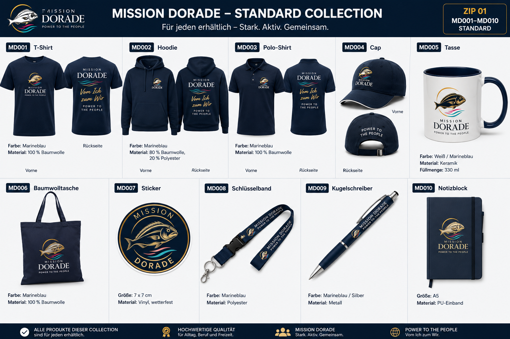
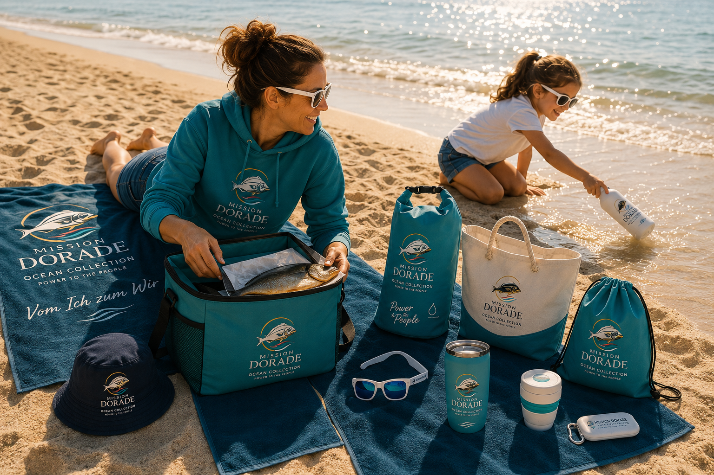
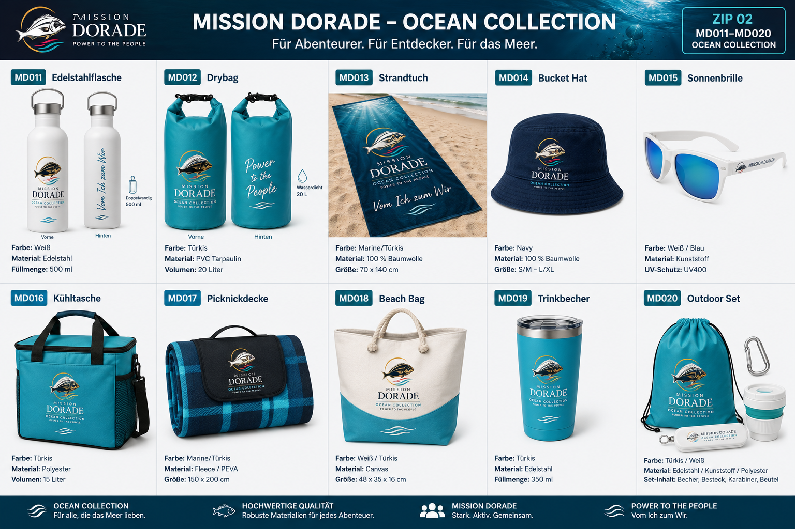
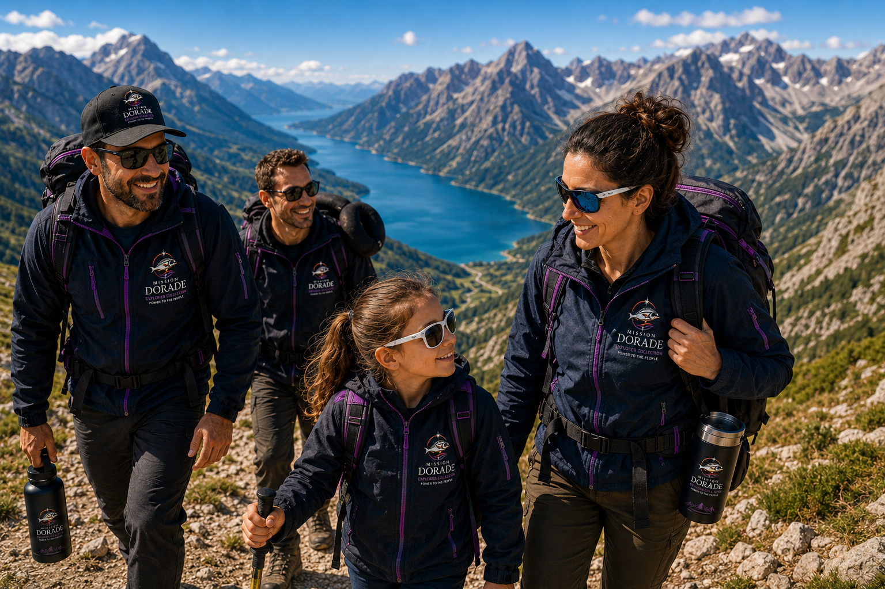
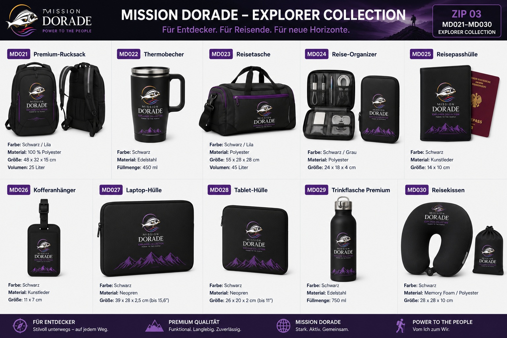
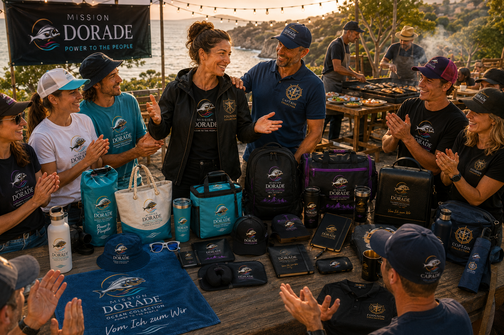
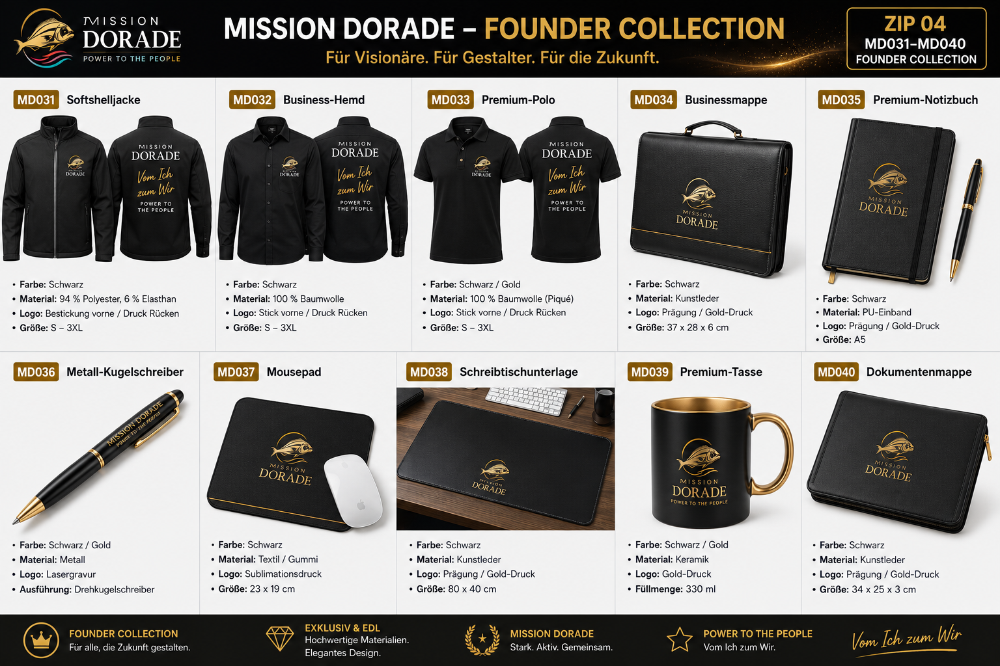
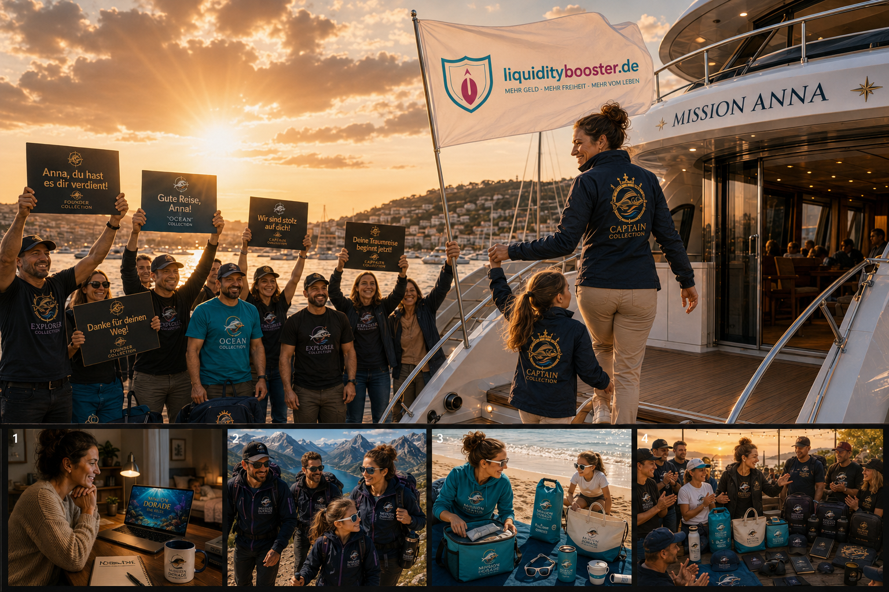
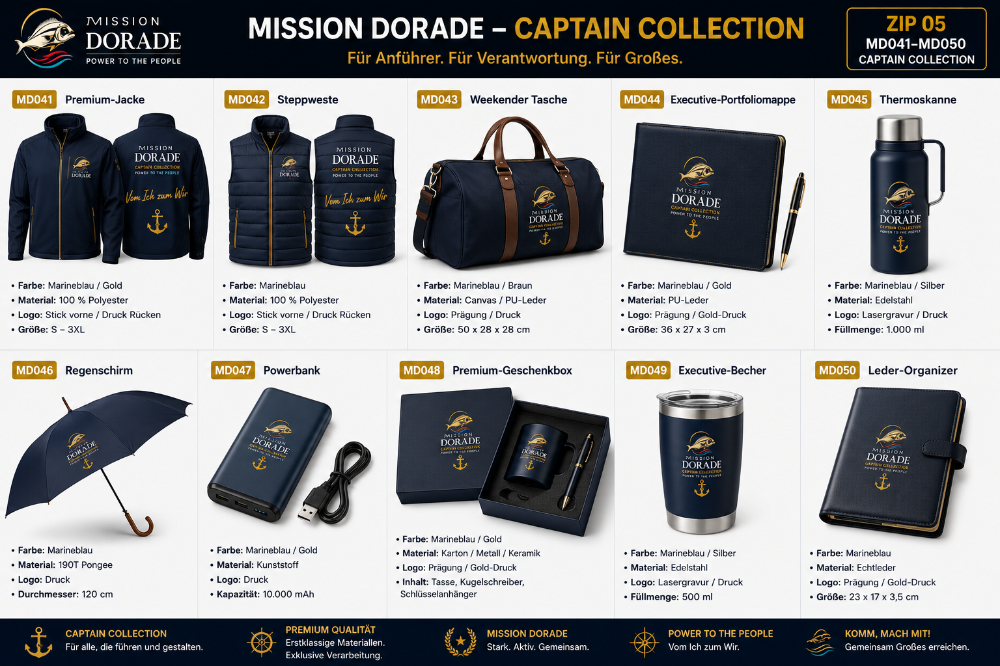

Alles beginnt mit einer Entscheidung
Es ist spät am Abend. Anna sitzt am Küchentisch, während ihre Tochter bereits schläft. Der Alltag war lang, das Konto ist knapp und wieder stellt sie sich dieselbe Frage: War das schon alles?
Auf dem Laptop entdeckt sie Mission Dorade. Kein schneller Reichtum, sondern ein einfacher Gedanke: Jeder beginnt gleich. Jeder hilft zwei Menschen – und hilft ihnen wiederum, das Gleiche zu tun.
Zum ersten Mal seit langer Zeit spürt Anna Hoffnung. Sie nimmt ihren Notizblock und schreibt zwei Worte auf die erste Seite: Mission Anna.
Der Weg beginnt nicht mit einem großen Erfolg. Er beginnt mit einer Entscheidung.
Standard Collection
Die ersten sichtbaren Zeichen der Mission.


Die ersten beiden Wellen
Anna beginnt zu lernen, zuzuhören und offen über ihren eigenen Weg zu sprechen. Viele hören freundlich zu. Zwei Menschen bleiben und beginnen mit ihr ihre eigene Mission.
Sie begleitet beide bei ihren ersten Schritten. Gleichzeitig entstehen die ersten kleinen Freiräume. Ein Tag am Meer. Ein Picknick. Zeit mit ihrer Tochter, die nicht zwischen Terminen und Sorgen verloren geht.
Anna erkennt: Erfolg bedeutet nicht nur mehr Geld. Erfolg bedeutet auch, wieder Zeit zu gewinnen und diese Zeit mit den Menschen zu verbringen, für die man all das begonnen hat.
Aus zwei Menschen werden die ersten beiden Wellen ihrer Reise.
Ocean Collection
Der erste erreichte Meilenstein – maritim, frei und voller Aufbruch.


Neue Horizonte entstehen im Team
Aus Tagen werden Wochen, aus Wochen Monate. Anna begleitet jeden Monat zwei neue Menschen und hilft ihnen, selbst Verantwortung zu übernehmen.
Sie ist längst nicht mehr allein unterwegs. Gemeinsam mit ihrer Tochter und ihren Club Partnern entdeckt sie neue Wege. Manchmal führt der Pfad steil nach oben, manchmal ist er steinig und furchteinflößend. Doch im Team wird jeder Schritt leichter.
Nach zwölf Monaten sind vierundzwanzig eigene Club Partner entstanden. Für andere ist das eine Zahl. Für Anna sind es vierundzwanzig Geschichten – und der Beweis, dass aus Konsequenz ein tragfähiger Weg werden kann.
Wer den Weg gemeinsam geht, entdeckt mehr als nur ein neues Ziel.
Explorer Collection
Für Entdecker, Reisende und Menschen, die neue Horizonte öffnen.


Aus Vormachen wird Befähigung
Anna hat die Aufgaben erfüllt, die diesen Weg ausmachen. Nun zeigt sie anderen nicht nur, was möglich ist – sie bringt ihnen bei, es selbst zu tun.
Als Founder bildet sie Explorer aus. Sie erklärt, hört zu, unterstützt und lebt vor, was sie weitergibt. Menschen aus Ocean, Explorer und Founder wachsen zusammen. Ein Captain steht an ihrer Seite und freut sich über ihre Entwicklung.
Aus einzelnen Erfolgen entsteht ein Fundament. Andere übernehmen Verantwortung, bilden wiederum Menschen aus und tragen die Mission weiter. Der Karriereweg von Anna nimmt Gestalt an.
Führung beginnt dort, wo Menschen stark genug werden, ohne dich weiterzugehen.
Founder Collection
Für Visionäre, Gestalter und Menschen, die ein Fundament schaffen.


Der Traum bekommt einen Namen
Lang war der Weg. Manchmal steinig, manchmal furchteinflößend. Es gab Zweifel, Rückschläge und Tage, an denen Anna am liebsten aufgegeben hätte. Doch sie blieb konsequent.
Heute geht sie Hand in Hand mit ihrer Tochter an Bord der Yacht Mission Anna. Am Hafen stehen die Club Partner, die ihr Fundament bilden. Ocean, Explorer, Founder und Captain – jeder auf seiner eigenen Etappe, aber alle Teil derselben Geschichte.
Anna nimmt die LiquidityBooster-Fahne mit an Bord. Sie weiß, dass ihr aufgebautes Unternehmen auch während ihrer Reise weiterlebt: Jeden Tag entstehen darin viele Arbeitsstunden, weil Menschen andere Menschen befähigen und Verantwortung weitertragen.
Sie startet ihre Traumreise mit der Gewissheit, dass sich all die Mühe bezahlt gemacht hat – nicht nur in Geld, sondern in Zeit, Freiheit, Gemeinschaft und einem Leben, das sie heute selbst steuert.
Anna ist nicht Captain über andere. Sie ist Captain ihres eigenen Lebens.
Captain Collection
Für Leader, Vorbilder und Menschen, die ihren eigenen Kurs halten.
